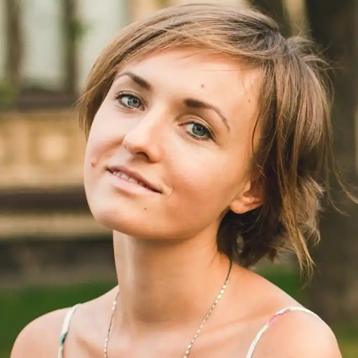
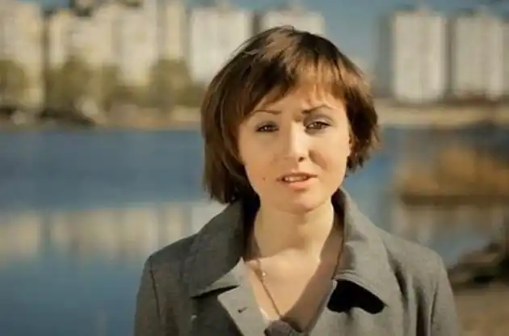

Анастасія народилася 31 січня 1991 року в м. Ніжин Чернігівської області. З 10 років мешкає в Києві, де навчалася в гімназії, а потім — у Фізико-технічному інституті "Київської політехніки".
Закінчила НТУУ "КПІ" взимку 2014 року, здобувши кваліфікацію спеціаліста з інформаційної безпеки. До 2014 працювала на одній з фірм із захисту інформації на комп'ютерних системах.
Вірші пише з 12-ти років. Здобула популярність під час Євромайдану завдяки своїм патріотичним віршам. Анастасія Дмитрук — авторка вірша рос. "Никогда мы не будем братьями", написаного у зв'язку з російською анексією Криму. За словами Анастасії: Литовські музиканти спільно з хором "Клайпедського музичного театру" записали відеокліп, який уже за два тижні після публікації на "Youtube" отримав понад мільйон переглядів. Вірші: 2014 року у видавництві рідного "Київського політехнічного інституту" вийшла з друку збірка віршів Анастасії Дмитрук "Верните нам наше небо". Того ж року книга була перевидана тиражем у 10 000 екземплярів за підтримки Ігоря Захаренка. В жовтні 2015 на малій сцені Палацу "Україна" відбулася прем'єра поетичної вистави А.Дмитрук: "Розв'яжи за спиною крила", за участі акторів Театру на Подолі. Режисер вистави Віталій Малахов. У грудні 2017 вийшла друком друга книга Анастасії Дмитрук "Це моя і твоя війна". У 2022 році ініціаторка та головна координаторка світової кампанії #terroRussia та #IndependanceInMyheart, які відбулися в більше як у 60-ти містах по всьому світу.